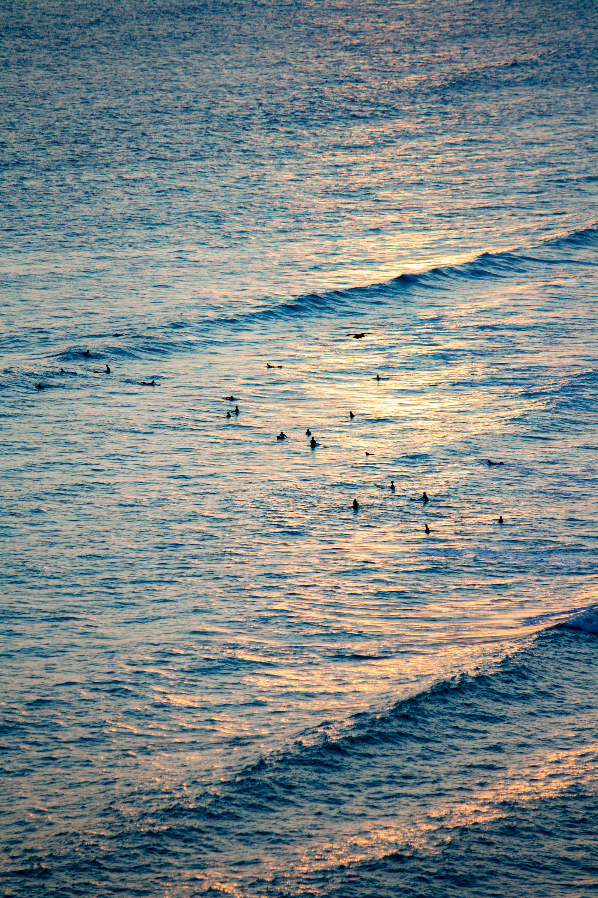

Departure board
Editorial
Board over photo
Florida
Break
Height
Period
Dir
Wind
Tide
NOAA NDBC · measured, not forecast
No score. Just swell.

PEXELS · FREE TO USE
Florida
Break
Height
Period
Wind
Tide
NOAA NDBC · measured
No score. Just swell.